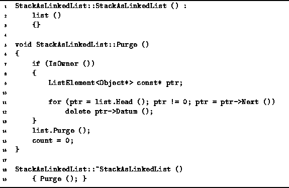

Data Structures and Algorithms
with Object-Oriented Design Patterns in C++
Data Structures and Algorithms
with Object-Oriented Design Patterns in C++
The definitions of the constructor and destructor functions for
StackAsLinkedList objects are given in Program  .
In the case of the linked list implementation,
it is not necessary to preallocate storage.
When using a linked list, the storage is allocated dynamically
and incrementally on the basis of demand.
.
In the case of the linked list implementation,
it is not necessary to preallocate storage.
When using a linked list, the storage is allocated dynamically
and incrementally on the basis of demand.

Program: StackAsLinkedList Class Constructor, Destructor and Purge Member Function Definitions
The constructor simply initializes the list variable using the default constructor for the LinkedList<T> class. The LinkedList<T> constructor runs in constant time. Thus, the running time of the StackAsLinkedList constructor is O(1).
The StackAsLinkedList destructor
simply calls the Purge member function.
The Purge function deletes
the contained objects if it owns them.
Hence, the Purge function goes through the elements of the linked list,
and follows the pointers to delete the objects one-by-one.
In general, because of the polymorphic implementation of Objects,
we cannot know the running time to delete an object.
However, if we assume that the destructors for all the objects
each run in constant time,
the total running time for the Purge function
is O(n), where  .
I.e., n is the number of elements in the stack.
.
I.e., n is the number of elements in the stack.
 Copyright © 1997 by Bruno R. Preiss, P.Eng. All rights reserved.
Copyright © 1997 by Bruno R. Preiss, P.Eng. All rights reserved.